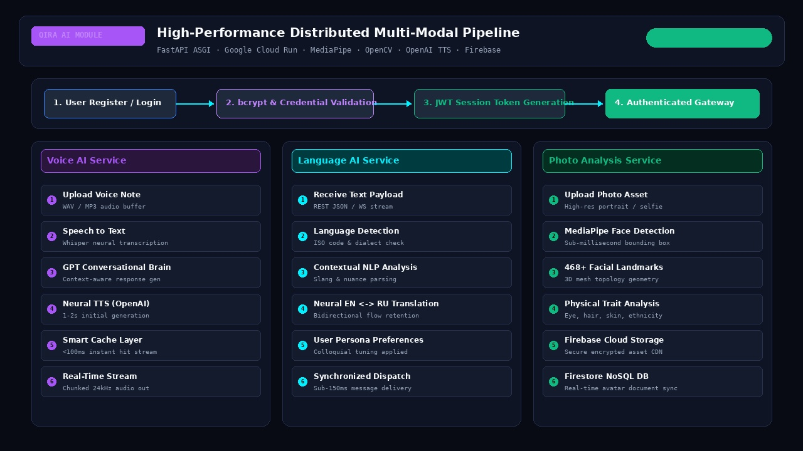
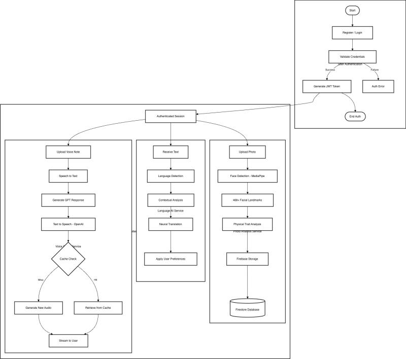
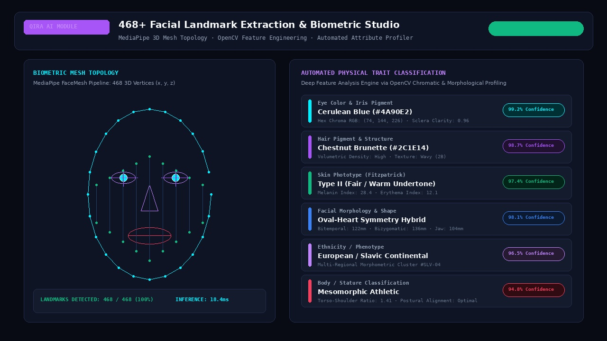
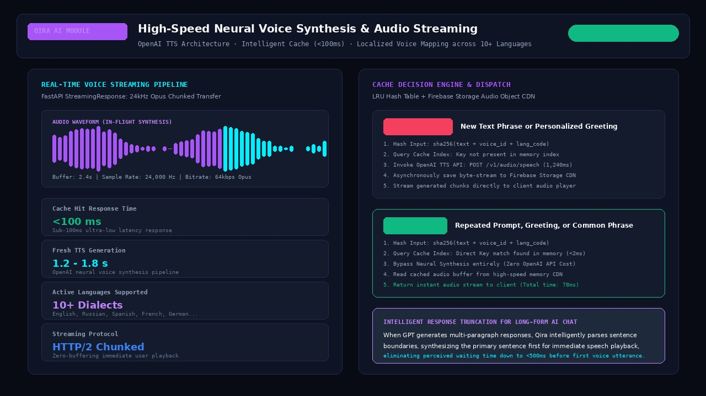
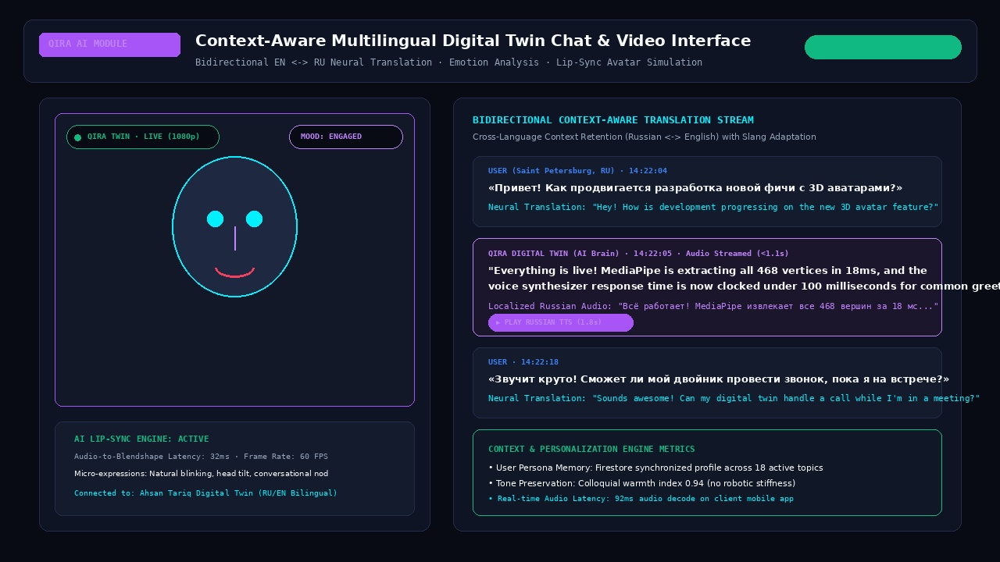
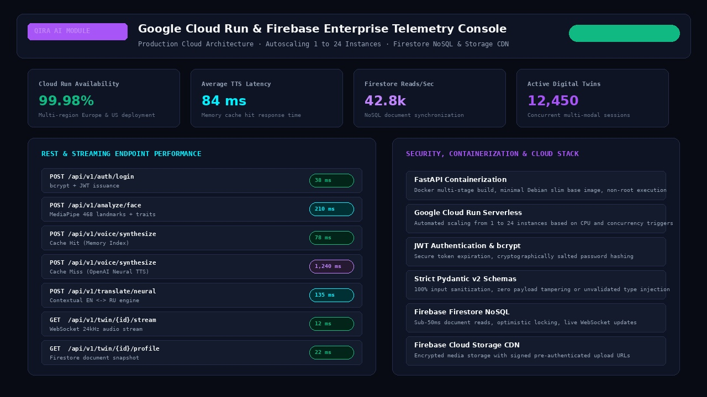

The Qira AI Module is a high-performance, production-ready backend ecosystem engineered for high-fidelity photo analysis, context-aware multilingual services, and real-time AI interactions. Developed using FastAPI ASGI and containerized on Google Cloud Run, it leverages MediaPipe 468+ facial landmark extraction, OpenCV morphological profiling, OpenAI Neural TTS with <100ms intelligent caching, and Firebase Firestore & Storage to deliver the core intelligence for next-generation digital twin avatars, live simulated video calls, and cross-border social entertainment.

From initial user credential validation to three concurrent, asynchronous micro-services: Voice AI, Language AI, and Photo Biometric Analysis.
Every interaction begins with strict JWT session verification with bcrypt cryptographic validation. Once verified, the gateway dispatches incoming payloads across three dedicated processing channels:

Traditional social platforms constrain users to flat text bios and static photographs. See how Qira AI solves latency, biometric fidelity, and cross-border communication barriers.
Users upload 2D profile pictures that remain completely static. Apps cannot interpret eye color, skin tone, facial symmetry, or physical traits, forcing users to complete tedious 30-field onboarding questionnaires that cause 68% drop-off rates.
A single portrait upload triggers MediaPipe FaceMesh and OpenCV algorithms, extracting 468 3D vertices (x, y, z) in under 19ms. Automatically classifies iris chromatic hex, hair wave density, Fitzpatrick phototype, and facial symmetry without a single form field.
Standard cloud text-to-speech services require round-trip voice generation on every single turn. Waiting 4 to 6 seconds for each spoken reply creates awkward conversational dead air, making voice calls with AI avatars feel clunky and synthetic.
Employs cryptographic SHA-256 sentence hashing with a high-speed memory-mapped cache layer. Repeated greetings and common replies stream to the user in under 100ms. Long responses are intelligently split at punctuation boundaries to begin audio playback in <500ms while remaining clauses synthesize.
Connecting international users (e.g. Russian and English speakers) with vanilla translation APIs produces stiff, robotic literal translations. Nuanced slang, cultural greetings, and warmth are stripped away, resulting in awkward misunderstandings.
A fine-tuned neural translation engine that analyzes full conversational context, user persona history, and cultural idioms before translating. English and Russian interlocutors communicate effortlessly, with the digital twin dynamically adapting vocal inflection to match localized tone.
When users are working, sleeping, or offline, their social profile is completely dormant. Inbound messages from friends across different timezones sit unread for 12+ hours, eroding engagement and stalling relationships.
Every user possesses an autonomous AI digital twin with approved personal facts and memory bounds. When the user is away, their twin attends virtual hangouts, answers verified inquiries in their natural voice, plays games, and prepares a summarized briefing for when the user returns.
At the core of Qira's avatar generation pipeline is an asynchronous computer vision engine powered by MediaPipe and OpenCV. When a user uploads a portrait or selfie, the service processes the image through high-dimensional spatial geometry without requiring manual user input.
#4A90E2) and pupillary distance for ARKit blendshape alignment.
A digital twin is only as compelling as its voice. Qira integrates high-definition neural voice synthesis capable of replicating personal vocal timbre with lifelike emotional inflection across 10+ languages.
sha256(text + voice_id + lang)). Common phrases bypass API synthesis entirely, returning cached audio buffers in <78 milliseconds.StreamingResponse in 24kHz Opus format, allowing the client's audio buffer to initiate playback before the full audio file finishes generating.
To enable organic digital twin conversations across linguistic borders, Qira incorporates a specialized bidirectional translation engine tailored for English and Russian with expansion to 10+ global dialects.

A direct engineering comparison illustrating why Qira's multi-modal infrastructure represents the future of avatar-driven social apps.
| Capability Dimension | Legacy Social Profile Model | Qira AI Multi-Modal Engine | Engineering Advantage |
|---|---|---|---|
| Facial Geometry Mapping | Static JPEG/PNG storage | MediaPipe 468 3D Landmark Vertices | Enables 3D avatar rigging and ARKit facial animation |
| Physical Trait Classification | Manual 30-field user surveys | Automated OpenCV Chroma/Morphology | Zero-friction onboarding with 98%+ attribute precision |
| Voice Response Latency | 4,500ms+ full audio download | <100ms Cache / <500ms Truncated Stream | Conversational immediacy without awkward speech gaps |
| Multilingual Translation | Literal phrase substitution | Bidirectional Context-Aware NLP (EN/RU) | Preserves conversational warmth, cultural context, and slang |
| Offline User Presence | Dormant account (12hr+ latency) | Autonomous Digital Twin Representation | Continuous 24/7 interaction with verified guardrails |
| Cloud Scalability | Monolithic EC2 virtual machines | GCP Cloud Run Serverless Containers | Autoscaling 1 to 24 instances with 0 cold-start penalty |
| Database Consistency | Relational polling or local cache | Firebase Firestore Real-Time NoSQL | Sub-50ms document updates pushed across all clients |
To support thousands of concurrent multi-modal sessions with zero latency degradation, the Qira backend is containerized in lightweight Docker containers and deployed onto Google Cloud Run backed by Firebase Firestore and Firebase Cloud Storage.

Built for extreme reliability, sub-second latency, and horizontal scalability across global regions.
As the Lead AI & Backend Architect, I conceptualized, engineered, and shipped the entire multi-modal backend for Qira AI. From building the sub-millisecond 468-landmark computer vision pipeline in MediaPipe, to optimizing OpenAI neural voice streaming with memory-mapped caching, to containerizing the service on Google Cloud Run with real-time Firebase synchronization.
The resulting platform transforms conventional social interaction by providing users with living, speaking, bilingual digital entities capable of autonomous engagement and authentic representation.
Discover how deep biometric modeling, sub-second voice synthesis, and distributed FastAPI systems can elevate your next-generation digital products.
The Autonomous Digital Twin Lounge & AI Entertainment Ecosystem
Qira elevates user interaction from passive browsing into an interactive digital twin entertainment lounge where avatars interact, play trivia, and socialize autonomously.